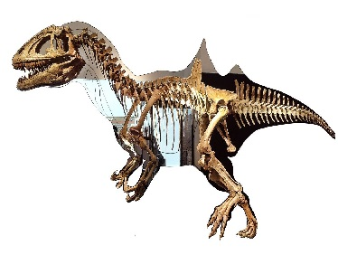

Unique Dinosaurs

1. Therizinosaurus – The "Scythe Lizard"
Time Period: Late Cretaceous (~70 million years ago)
Found In: Mongolia
Unique Feature: Had giant 3-foot-long claws, originally mistaken for a carnivore but was actually a plant-eater!

2. Concavenator – The Hump-Backed Hunter
Time Period: Early Cretaceous (~130 million years ago)
Found In: Spain
Unique Feature: Had a mysterious hump on its back, possibly used for heat regulation or display.

3. Halszkaraptor – The "Swimming Raptor"
Time Period: Late Cretaceous (~75 million years ago)
Found In: Mongolia
Unique Feature: Had duck-like features, suggesting it could swim, making it a rare aquatic dinosaur!

4. Yi qi – The Bat-Winged Dinosaur
Time Period: Late Jurassic (~160 million years ago)
Found In: China
Unique Feature: Had bat-like wings with a skin membrane, unlike any other dinosaur!

5. Stygimoloch – The Demon-Headed Dinosaur
Time Period: Late Cretaceous (~66 million years ago)
Found In: North America
Unique Feature: Had spiky horns and a thick skull, possibly used for head-butting in fights.

6. Bajadasaurus – The Spiky-Necked Herbivore
Time Period: Early Cretaceous (~140 million years ago)
Found In: Argentina
Unique Feature: Had long, curved spikes on its neck for defense!

7. Incisivosaurus – The Buck-Toothed Dino
Time Period: Early Cretaceous (~125 million years ago)
Found In: China
Unique Feature: Had rodent-like front teeth, unlike most theropods!

8. Pegomastax – The Fanged, Parrot-Like Herbivore
Time Period: Early Jurassic (~200 million years ago)
Found In: South Africa
Unique Feature: Had a beak, sharp fangs, and was covered in bristles, making it a bizarre mix of traits.
Back
Next
Content Page